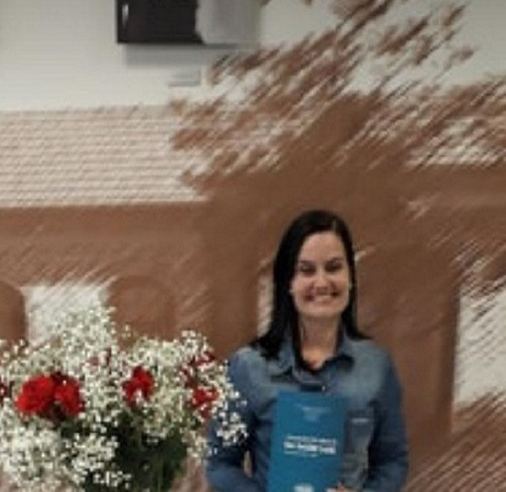

Sobre
Leia mais sobre o Projeto

Projeto Interdisciplinar: Projeto Savana.
Este projeto faz parte da Unidade Escolar ETEC Prof. Maria Cristina Medeiros, acontece no 1° ano do Ensino Médio – Integrado ao Técnico de Recursos Humaonos, período manhã. Desenvolvido de julho a outubro de 2021.
A proposta central envolveu o desenvolvimento de um site e a produção de vídeos com a representação da diversidade do bioma brasileiro, apresentando as características e hábitos das regiões conhecidas como Amazônia, Araucária, Caatinga, Cerrado, Mata Atlântica, Mata dos Cocais, Pampa e Pantanal.
Adotou como princípio, o papel ativo dos alunos na construção do conhecimento e desenvolvimento de habilidades que incluíram competências socioemocionais relacionadas:
- Trabalho em equipe;
- Criativade;
- Pro-atividade e responsabilidade nas entregas;
Componenentes Curriculares
O objetivo é trabalhar a interdisciplinaridade entre os componentes curriculares:
Biologia
Aplicativos Informatizados
Inglês
Projeto Integrador
Alunos e Docentes
Saiba mais sobre os alunos criadores e as professora orientadoras do Projeto Savana!
Sou a Beatriz Ramalho, tenho 15 anos e atualmente curso o 1° ano do Ensino Médio integrado ao técnico de Recursos Humanos na ETEC Professora Maria Cristina Medeiros.
Beatriz Ramalho
Aluna & Criadora
Sou a Isabella Santos, tenho 15 anos e atualmente curso o 1° ano do Ensino Médio integrado ao técnico de Recursos Humanos na ETEC Professora Maria Cristina Medeiros.
Isabella Santos
Aluna & Criadora
Sou o Felipe Nogueira, tenho 15 anos e atualmente curso o 1° ano do Ensino Médio integrado ao técnico de Recursos Humanos na ETEC Professora Maria Cristina Medeiros.

Felipe Nogueira
Aluno & Criador
Sou o Felipe Souza, tenho 15 anos e atualmente curso o 1° ano do Ensino Médio integrado ao técnico de Recursos Humanos na ETEC Professora Maria Cristina Medeiros.
Felipe Souza
Aluno & criador
Sou a Fernanda de Paula, tenho 15 anos e atualmente curso o 1° ano do Ensino Médio integrado ao técnico de Recursos Humanos na ETEC Professora Maria Cristina Medeiros.

Fernanda Paula
Aluna & Criadora
Professora responsável pelo apoio e organização do Projeto; Professora de Informática e Gestão de Projetos Centro Paula Souza - ETEC Professora Maria Cristina Medeiros; Desenvolvedora Web e de Inteligência Artificial - Tecnologia Única.
Prof. Cíntia
Professora & Orientadora
Professora responsável pelo apoio e organização do Projeto; Bióloga, Gestora Ambiental e Mestra em Ciências; Professora de Biologia na ETEC Professora Maria Cristina Medeiros.
Prof. Carolina
Professora & Orientadora
Professora responsável pelo apoio e organização do Projeto.
Prof. Agda
Professora & Orientadora
Professora responsável pelo apoio e organização do Projeto. Mestra em Administração, especialista em Logística Empresarial e Supply Chain e em Neuropsicopedagogia, bacharel em Administração e Licenciada em Pedagogia Leciono nos cursos do eixo de Gestão e Negócios na Etec Profª Maria Cristina Medeiros e na Fatec de Mauá.


{kind=link}
{kind=link}
{kind=link}
{kind=link}
{kind=link}
{kind=link}
{kind=link}
{kind=link}
{kind=link}
{kind=link}
{kind=link}
{kind=link}